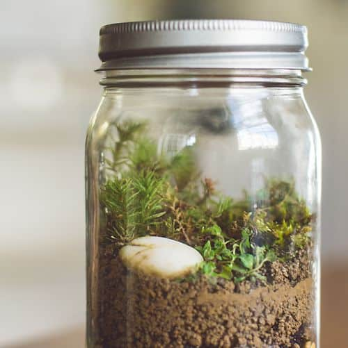

Que tal fazer um Terrário usando Pote de Vidro
Detalhes
Terrário
Materiais necessários:
• Pote de vidro com tampa
• Jornal, papel, papelão ou plástico
• Pedras, terra e musgos
• Colher e palito de madeira
• Sementes ou mudas de plantas de sua preferência, recomendamos usar suculentas, que são fáceis de cuidar e estão super em alta.
Modo de preparo:
Forre o local onde você vai trabalhar, com jornal, papel, papelão ou plástico. Adicione as pedras dentro do pote de vidro , com o auxílio da colher. Logo após, coloque a terra dentro do vidro, também com o auxílio da colher. Agora, comece a colocar na terra, o musgo, as sementes ou as mudinhas.
Em seguida, para finalizar a sua peça, termine de plantar na terra o que você quiser ou termine de posicionar musgos e mudinhas dentro do pote e coloque mais pedras ao redor das plantas. Depois tampe o vidro. E está pronto!

Transformando seu Vidro de Conserva em Luminária
Detalhes
Luminária
Materiais necessários:
• Vidro limpo e vazio
• Fio PP
• Soquete E27
• 1 Lâmpada, ou um filamento de LED
• Furadeira
• Canopla
• Pé de galinha para niple
• Alicate e chaves de fenda
• Porcas e parafusos
Modo de preparo:
A primeira coisa que deve ser feita é um furo bem no centro da tampa do pote. Agora corte o fio e coloque os seus polos negativo e positivo no lugar certo. Para que isso seja feito, você deve descascar a ponta de cada um dos dois com a alicate. Depois que os fios estiverem preparados no soquete, basta colocar o parafuso. Aproveitando que você terá descascado um dos lados do fio, descasque também a outra extremidade, que será usada para ligar na parte elétrica da casa ou lugar onde a luminária ficará.
No fundo do soquete existe um niple pequeno. Após ter efetuado a ligação elétrica, você deve passar o cabo elétrico pela tampinha, colocando uma porquinha logo depois para que haja um maior revestimento. De agora pra frente já poderemos colocar a lâmpada! Pensando na instalação no teto, devemos utilizar mais uma porquinha, para a fixação. Como último passo, vamos rosquear a porca na canopla para pendurar no teto. Quando os fios tiverem sido passados e as porcas devidamente utilizadas a sua luminária finalmente estará pronta!

Adubo com Casca de Banana
Detalhes
Adubo
Ingredientes:
• 5 cascas de banana;
• 1,5 litro de água;
• 1 garrafa de plástico (com capacidade de 1 litro);
• 1 panela.
Modo de preparo:
Pique as cascas em pedaços pequenos e coloque-as em uma panela com 1 litro de água. Leve a panela ao fogo por 15 minutos. Ao final do tempo, desligue o fogo e deixe a água esfriar. Quando a água estiver fria, coe e reserve. As cascas podem ir para a sua composteira. Agora adicione à água mais 500 ml e guarde na garrafa de plástico. Na hora de usar o adubo nas plantas ele deve ser misturado na seguinte proporção: 1 parte de adubo para 5 partes de água. E faça a adubação somente uma vez por semana.
Pronto!